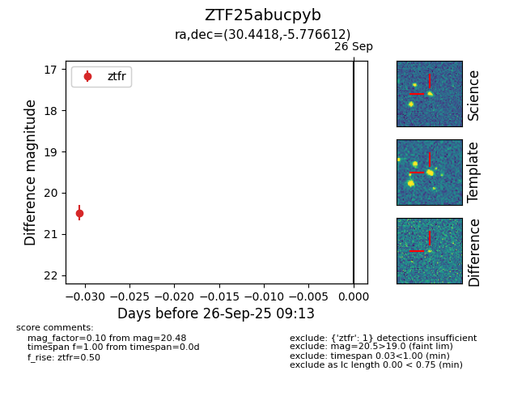

FINK: ZTF25abucpyb
Lasair: ZTF25abucpyb
ALeRCE: ZTF25abucpyb
ZTF25abucpyb (ztf,fink)
equatorial (ra, dec) = (30.4418,-5.77661)
galactic (l, b) = (164.1659,-62.87294)

last ztfr=20.48
1 ztfr detections